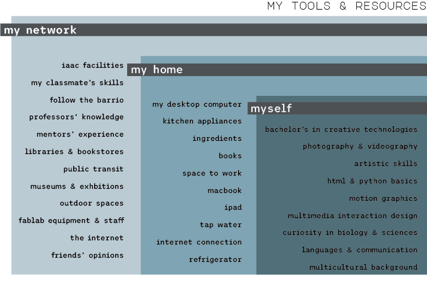

Design Studio Assignment
Updated Workspace
Here is my updated workspace, containing multiple levels, from my network, to my home and finally myself. Each of these layers possess tools and knowledge which could aid me in the continuation of this Master's program when developing projects, ideas and prototypes. I hope to get to use them soon!

Updated workspace